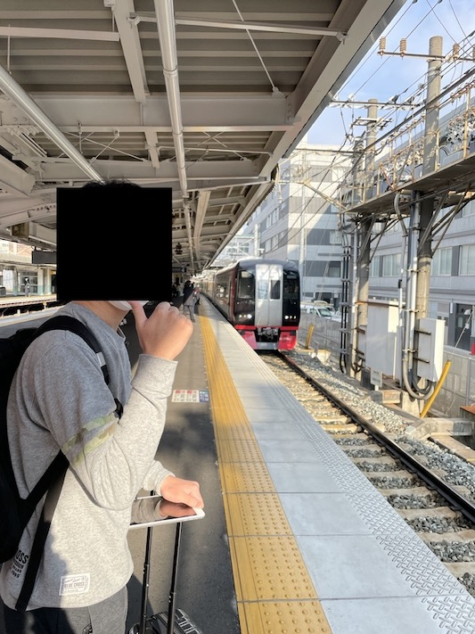

12月22日
やっと久しぶりに書けた。約二ヶ月前くらいにGithub Pages立ててそっから日記綴る！って思って三日坊主しました。三日坊主の典型例になってしまったね。てへ。
というのも進路に向けて色々と忙しかったんよ最近。受験生だから許して。
ただただ！開発はまだまだ全然やっておりますね。勉強していたとしても、開発欲というのは抑えられないものだなぁと思った。最近一番頑張ったのは（勉強しろ）は、これです！！！！
え、ただの僕のGithubプロフィールに見えたって？！ は！？！？！？？！！！！ よく見てよん！
Githubのプロフィールめちゃいい感じにした。僕感出てて良い。
プロフィールでオセロ遊べるようにしました。ぜひやって見てほしい。必要なものはGithubのアカウントのみ。
まぁ仕組みとしては、もうわかる人にはわかると思うが、

こんな感じ。このitermいっぱい表示してスクショするっていうのやってみたかった。謎の願望ね。
こんなに一気にウィンドウ閉じられると快感。ただ、Safariで⌘w押そうと思ったのに⌘q押しちゃうの本当に悔しいからやだね。
話だいぶそれましたが、（塾の先生の口癖ね。話いつもそれまくってて神。話は後でする）プロフィールでちょいとばっかし自分のプログラミングの技量を盛れた気がする。マジでやってることがsnowと一緒やなw蓋を開けてみたらポンコツプログラマーだったっていうオチになるのが嫌ぁねぇ。
とりあえずまだ試合終了判定上手く動作するか検証していないから、暇な方はじゃんじゃんオセロ置いちゃってほしいです！お願い！！！
https://github.com/temps1101/temps1101
あとhttpsがHttpsって自動変換されるのまじうざいね。
snow
僕のインスタ（マジ知人じゃないとフォロリク通さないからフォロリクはしないで。してもいいけどね）のプロフィール見てもらうとわかる通り、僕は無加工主義である。要するに顔写真撮る時は加工をしたくないっていうこと。
なぜかっていうと過度な加工に物凄く嫌悪を感じるから。それをまじめに可愛い！っていう人がよくわからん。毎回女の子のプリクラ見て思うのはいつも（無加工）の方が良いということね。
この主義の理由、本質がまだまとまっていないが、とにかく嫌なんです！
ただ、人前ではこんなこと絶対言わないし、肯定はしている。snowは自分の容姿に不満を抱く乙女乙男が夢を見るためのアプリだからだ。そこにいちいち僕みたいな人が口挟むと夢台無しになるじゃん、だから絶対に言わない。じゃあここでなんでいうんだよ。
あ、あと自分の容姿全く気にしていないからっていうのもあるかも。端的にいうと開き直ってるんだな自分。加工したってどうせ自分の元の容姿は変わらないから面白さ追求しよう！ってなってるんだ。
マジで価値観合わない。
SPY×FAMILYにハマった話
クラスメイトのdiscord、LINE、インスタ（LINEは違うかも）のアイコンに独特な雰囲気の女の子の写真が使われていて、僕は興味を持ちなんの写真か尋ねると、画像はSPY×FAMILYに登場するアーニャ・フォージャーという女の子の写真だそうだ。追加で何枚か写真をいただいたが、可愛い。初めてアニメキャラクターに可愛いっていう感情を抱いたぐらい可愛い。
そんで漫画その子から借りて今読んでるんだが、面白い！！！！！2022にアニメ化とかタイミング神ってる僕。
アーニャも良いがイーデン校のクラスメイトのダミアン君とベッキーちゃんがマジでいい。
友達（男子）にこのこと話したら、おまえろりこんか、と言われました。別によくないですか？！恋愛感情抱いてないし！
女子も十分大変だと思うけどこういうことあるから男子も大変よねっ！！!
名古屋に行ったこと
静岡県在住で、12月いつだっけなぁ結構上旬に名古屋
SKY
EXPO
にいった。
そうだ、サカナクションのライブを見に行くためである。勉強しろよ！
いやーサカナクションはコロナ自粛と同時に好きになったから一回もライブ行けてなかったんよ、だから人生初のライブでした。もうほんと感動。エンターテイメントで初めて泣いたもん僕。
とりあえず今回のADAPTツアー（今回のサカナクションのツアー名）の初公演に行けて幸せだった。
なにせ一郎さんにとっても結構忘れられないようなライブになったと思うから。
もうね、なんと言っても一郎さんがアンコール曲の序盤をほとんど歌えてなかったことがすごく印象に残っている。ベタだが本当に印象的だった。まぁ調べれば出るでしょ。どういうことか。
今も（ティーンエイジっていうサカナクションの曲聞いてるなう。）これからもずっとサカナクションを押し続ける。
あとポータブルバッテリーめちゃんこ欲しかった。
最後に

ミュースカイのなんかグリーン車みたいなのに乗った画像。